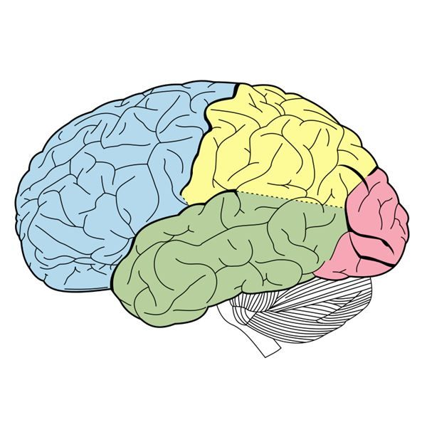

Hover over different regions of the brain to discover their functions and how they influence behavior, memory, movement, emotions, and perception.

At the front of the brain, immediately above the eyes. Parts of these lobes coordinate voluntary movements and speech, memory and emotion, higher cognitive skills like planning and problem-solving, and many aspects of personality.
Located at the top of the brain, immediately behind the frontal lobes. They integrate sensory signals from the skin, process taste, and process some types of visual information.
Lies on the sides of the brain, at and below the level of the eyes. They carry out some visual processing and interpret auditory information. The hippocampus consists of curved structures lying beneath the cerebral cortex; it is a region of the temporal lobes that encodes new memories. Another deep structure within each temporal lobe, the amygdala, integrates memory and emotion.
The back of the brain houses the occipital lobes. They process visual information and are responsible for recognizing colors and shapes and integrating them into complex visual understanding.
At the back of the head, just above and behind where the spinal cord connects to the brain. It's central role is controlling movement and timing. It was thought it's job was coordinating muscle movements, later technology advances has shown that the cerebellum is capable is more than that.
Sitting at the bottom of the brain containing midbrain, pons, and medulla ablongata. It's job is connecting the braon and the spinal cord together, sending messages to the rest of the body regulating balance, blood pressure, heart rate and more.